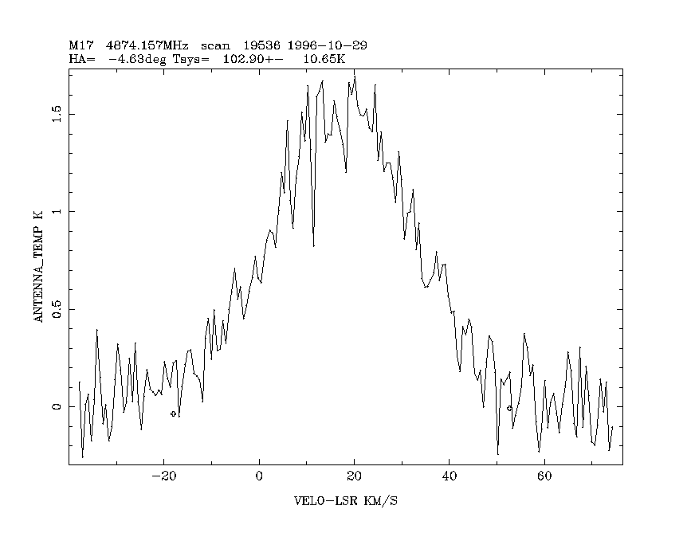

INT [Vstart] [Vend] [M/S] [memory]
Calculate the line integral and line shape statistics.
It is assumed that any baseline curvature has been removed
by prior polynomial fitting.
Vstart and Vend are the velocities within which the line(s) are found.
If they are not specified the user is prompted for them.
The MINIMUM velocity range that includes the line(s) should be used.
If either is outside the velocity limits of the spectrum
then it is set equal to the appropriate limit.
M or S indicate whether Multiple lines or a Single line is present.
If not specified the user is prompted for it.
If the memory is not given as a parameter, the set memory is used.
The quality of the results will depend on the signal/noise ratio
and must be treated cautiously.
In addition to being listed on screen, the results of the integral
calculation are written to the file "integral.out" in a multi-column
ascii format suitable for importation into a spreadsheet program.
The following data are listed by INT:
for all spectra:
date of calculation
object identifier, from housekeeping
date of observation, from housekeeping
Julian date - 244000, from housekeeping
velocity limits applied by the user for the calculation
theoretical rms noise in the spectrum, from housekeeping
percentage uncertainty in calibration
velocity of the line peak - the highest/lowest point in the spectrum
line height - value of the highest/lowest point in the spectrum
line integral - defined as the sum of the data within the velocity range
specified by the user, times the resolution of the spectrum (pixel
spacing).
an estimate of the uncertainty in the line integral
for single lines:
velocity of the line centroid
an estimate of the uncertainty in the line centroid
velocity of the weighted mean
line zero crossing width
line equivalent width
line full width at half maximum
an estimate of the uncertainty in the FWHM
skewness
peakedness
for hydrogen recombination lines:
These are identifed as single lines for which the continuum antenna
temperature and its uncertainty estimate are defined.
continuum antenna temperature from housekeeping
uncertainty in the continuum antenna temperature from housekeeping
LTE electron temperature
uncertainty in the LTE electron temperature
turbulent velocity
uncertainty in the turbulent velocity
Here is an example:
Integral of M17 scan 19536 of 1996-10-29
start end
array index limits: 72 186
velocity limits: -18.053 52.065 km/s
RMS noise in the spectrum = 0.124000 K
Calibration uncertainty = 10.355 %
Line peak is at 20.081 km/s, I =134.000
Line centroid is at 17.498 km/s, I =129.800
+- 1.359 +- 2.209
Weighted mean is at 17.243 km/s, I =129.386
Line zero crossing width = 63.764 km/s, centered on 15.259 km/s
Line equivalent width = 33.383 km/s, centered on 17.498 km/s
Line full width at half max = 21.430 km/s, centered on 22.203 km/s
+- 2.717
skewness = -6.25434218
peakedness = 235.415547
Line height = 1.694173 +- 0.214827 K
Line integral = 56.556372 +- 5.863393 K*km/s
HII region parameters from rec. line & continuum :
Continuum Temp used = 15.00 +- 0.50
LTE Electron Temp = 3083. +- 292. K
Turbulent Velocity = 13.12 +- 2.42 km/s
This is what the data looked like:
